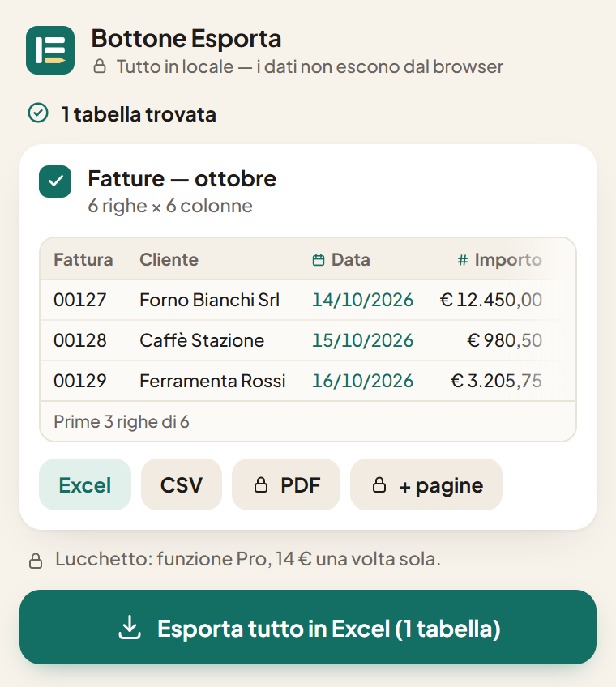

Qualsiasi tabella di un sito, in Excel pulito.
Un clic e la tabella diventa un foglio su cui puoi lavorare: numeri che si sommano, date che si ordinano, zeri iniziali al loro posto. Pensato per i vecchi gestionali web che non hanno un bottone Esporta.
Nessun accountNiente esce dal tuo browser10 lingue
Fatture — ottobre
| Fattura | Cliente | Data | Importo | CAP |
|---|---|---|---|---|
| 00127 | Forno Bianchi Srl | 14/10/2026 | € 12.450,00 | 00118 |
| 00128 | Caffè Stazione | 15/10/2026 | € 980,50 | 20121 |
| 00129 | Ferramenta Rossi | 16/10/2026 | € 3.205,75 | 10121 |
| 00130 | Studio Dentistico Sorriso | 20/10/2026 | € 1.140,00 | 40121 |
| 00131 | Tipografia Riva | 22/10/2026 | € 27.300,00 | 09124 |
| 00132 | Pasticceria Lago | 27/10/2026 | € 615,20 | 37121 |

Il copia e incolla rovina i dati. Questo no.
Una tabella incollata in Excel sembra a posto, finché non provi a usarla. Ecco cosa sistema da solo Bottone Esporta, prima che il file arrivi a te.
I numeri restano numeri
Gli importi con il simbolo della valuta e il punto delle migliaia diventano numeri veri, in qualsiasi formato: € 1.234,56, $1,234.56, R$ 1.234,56. Il separatore lo capisce guardando tutta la colonna.
Le date diventano date
14/10/2026, 10/14/2026, 14 ottobre 2026: l’ordine di giorno e mese lo ricava dalla colonna, così le date si ordinano e si filtrano come devono.
I codici tengono gli zeri
CAP, numeri di fattura, codici fiscali, partite IVA e numeri di telefono restano esattamente come sono scritti. Basta con 00118 che diventa 118.
Le tabelle che gli altri strumenti non vedono
Tabelle chiuse in un riquadro della pagina, una prima colonna bloccata accanto a quelle che scorrono, intestazioni tenute in una tabella a parte, dati divisi su tante pagine. Le trova e le rimette insieme.
Tre passi, niente da impostare
Fissa l’icona
Dopo l’installazione, clicca il pezzo di puzzle in alto a destra nel browser e fissa Bottone Esporta con la puntina: così è sempre a un clic.
Apri la pagina con la tua tabella
Un portale aziendale, la schermata di un vecchio gestionale, un report, una pagina pubblica. Clicca l’icona: le tabelle compaiono in elenco, e ognuna si illumina sulla pagina quando ci passi sopra con il mouse.
Scegli Excel o CSV
Il file viene creato nel tuo browser e scaricato, già formattato e con i filtri attivi. Aprilo e mettiti al lavoro.
I dati dell’ufficio restano nel tuo browser
Bottone Esporta legge la tabella e crea il file sul tuo computer. Nessun server, nessun account, nessun tracciamento. Per questo puoi usarlo tranquillamente anche sui portali interni.
Gratis per l’uso di tutti i giorni. Pro si paga una volta sola.
Gratis
0 € per sempre
- Esporta una tabella alla volta in Excel o CSV
- Tutta la pulizia automatica
- Excel già formattato, con i filtri attivi
- Nessun limite di righe
Pro
14 € pagamento unico, tuo per sempre
- Tutto quello che c’è nella versione gratuita
- Unisce una tabella divisa su tante pagine, cliccando «Avanti» al posto tuo
- Salvi un’esportazione e la rifai con un clic
- Esportazione in PDF
- Più tabelle in un solo file Excel
Guide
Stai sistemando a mano una tabella incollata? Queste guide spiegano perché si rovina e come rimetterla a posto, con o senza l’estensione.
Come esportare una tabella da un sito web in Excel
Copia e incolla, «Dal Web» di Excel o un’estensione: cosa regge ciascuno, e dove si blocca.
Leggi la guida →
Perché Excel toglie gli zeri iniziali, e come tenerli
CAP, codici e numeri di telefono che perdono il primo zero, o che diventano 1,23E+10.
Leggi la guida →
Numeri copiati da un sito che in Excel diventano testo
Somme che danno 0, e 1,250 dollari scritti all’americana che diventano 1,25: virgole, punti e come sistemarli.
Leggi la guida →
Provalo sulla tua tabella.
Gratis, senza account, si installa in pochi secondi. Oppure provalo prima su una tabella di esempio.